This step converts points expressed in the camera coordinate frame into the world coordinate frame using the camera-to-world extrinsic matrix. The code first ensures that the input points and transformation matrices are in torch format and correctly handles both single points and batches. Points are converted to homogeneous coordinates, multiplied by the transpose of the c2w matrix to account for PyTorch’s row-vector convention, and then converted back to non-homogeneous form. The result is the corresponding location of each input point in the global world coordinate system.
This stage converts 2D pixel coordinates into 3D camera coordinates by reversing the pinhole projection operation. Given the intrinsic matrix and an assumed depth value, each pixel location is lifted into a 3D point in the camera frame. The function forms homogeneous pixel coordinates, multiplies them by the inverse intrinsic matrix, and scales by depth, producing a direction-aligned point in the camera coordinate system.
To build a ray, I use the camera-to-world matrix to determine the camera’s position (the ray origin) and transform a 3D point along the viewing direction into world coordinates. The ray direction is computed by subtracting the origin from the transformed point and normalizing the result. This yields a ray described by an origin and a direction vector for each image pixel, forming the basis for sampling and rendering in NeRF.
Once ray origins, ray directions, and pixel colors are precomputed for all images, the sampling function selects a random subset of rays to train the model. This reduces the computational load by working with a manageable number of rays per iteration while ensuring the sampled rays are drawn uniformly from the entire dataset, allowing the model to learn from all regions of the scene.
To prepare inputs for volume rendering, I sample multiple 3D points along each selected ray between near and far depth bounds. I use evenly spaced depth values and apply random perturbation to prevent aliasing and improve learning stability. Each sampled 3D point is computed using the ray equation, producing a structured grid of sample coordinates and corresponding depth values that serve as NeRF inputs.
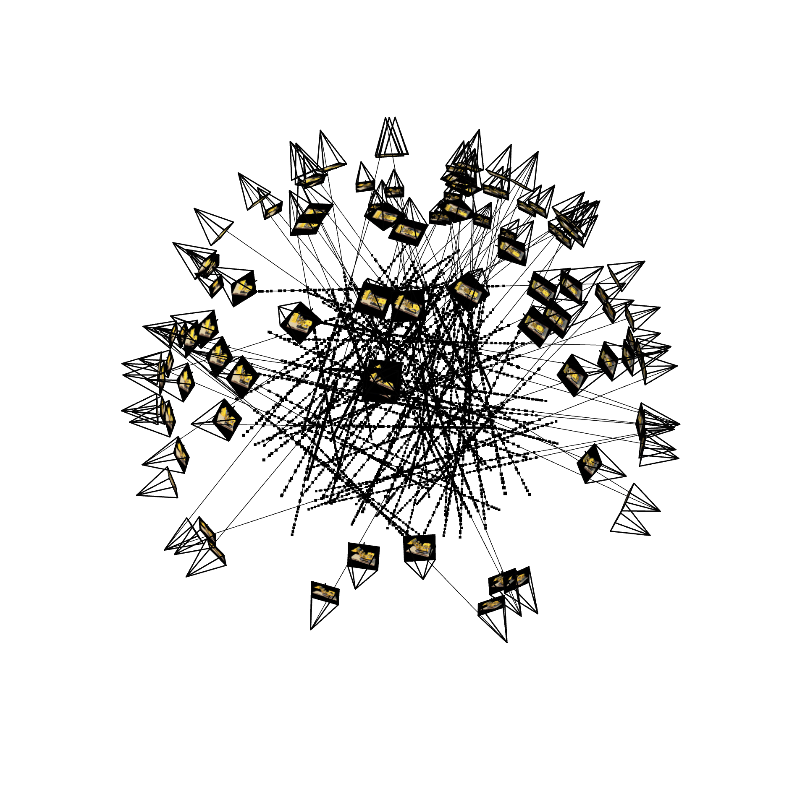
This visualization shows all cameras as well as 100 sampled rays in 3D.
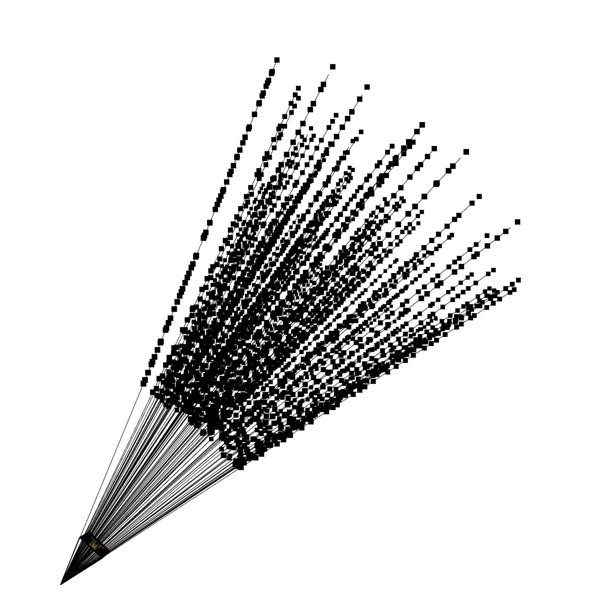
This visualization shows one camera and its rays. You can see how all rays stay inside the camera frustrum.
My neural network architecture is the same as the one in the project spec:
For positional encodings, I followed the equation from the problem spec. I kept the original input in the positional encoding, then used the alternating sin, cos of pi * input * 2**i where i is an index from 0 to L-1.
Here are my hyperparameters:
num_iterations=10000, batch_size=10000, learning_rate=5e-4, device=device, log_every=100, render_every=100, near=2.0, far=6.0, n_samples=64
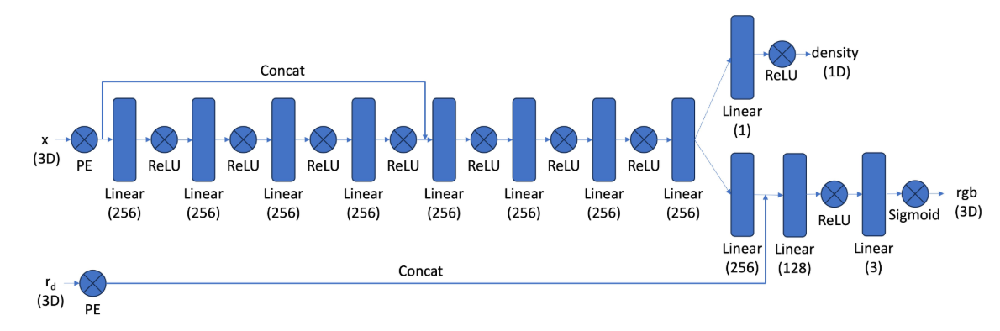
This function implements the core volume rendering equation used in NeRF to convert sampled colors and densities along each camera ray into a final pixel color. Given RGB values and volumetric density values at multiple sample points along each ray, it first computes the spacing between sample locations and converts densities into alpha values that represent the probability of light terminating at each point. It then computes the ray transmittance, which represents how much light reaches each sample without being absorbed by earlier samples, using a cumulative product. The contribution of each sample is determined by multiplying its alpha value with the transmittance, producing per-sample weights. Finally, the function forms the rendered pixel color by taking a weighted sum of all RGB sample values along the ray, yielding a (N_rays × 3) output where each value represents the final color seen by the camera along a ray.
Nerf Discussion worksheet was very helpful for this part, thanks TAs!!
In my first few attempts, I had an issue where the Nerf outputted very blurry reconstructions. I eventually realized that it was because in my positional encoding function, I accidentally typed 2**L in my for loop, which meant that every element was extremely high frequency. My original attempts at NERF reconstruction were so blurry because the MLPs could not represent such high frequencies, so the model underfitted and produced a smoothed-over result.
So, it makes sense that none of my hyperparameter sweeps nor increasing the training time (not shown) did anything to improve the reconstruction quality. Initially, I had thought that increase the number of hidden units in my linear layers from 128 to 512 would help the model capture higher frequencies, but this, as I learned later was, not the real problem. I also tried sweeping the L values to no avail.
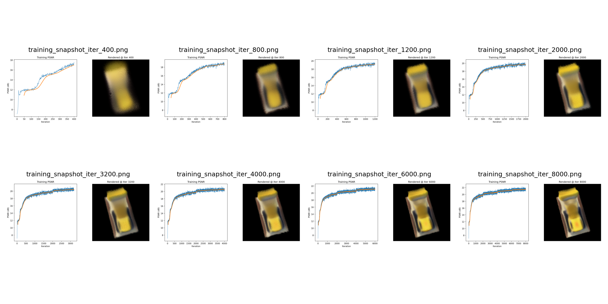
PSNR curves on training and validation set.
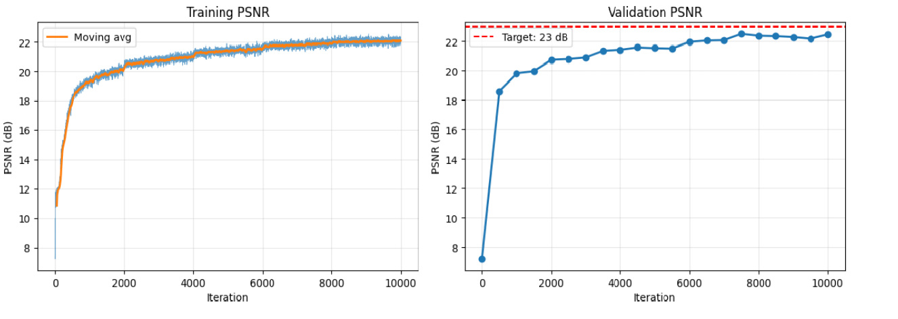
3D rendering.
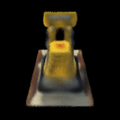
After fixing the positional encoding function as well as changing a few bugging x,y indexing to y,x indexing in my meshgrids, I saw a significant improvement in quality of results, loss, and PSNR.
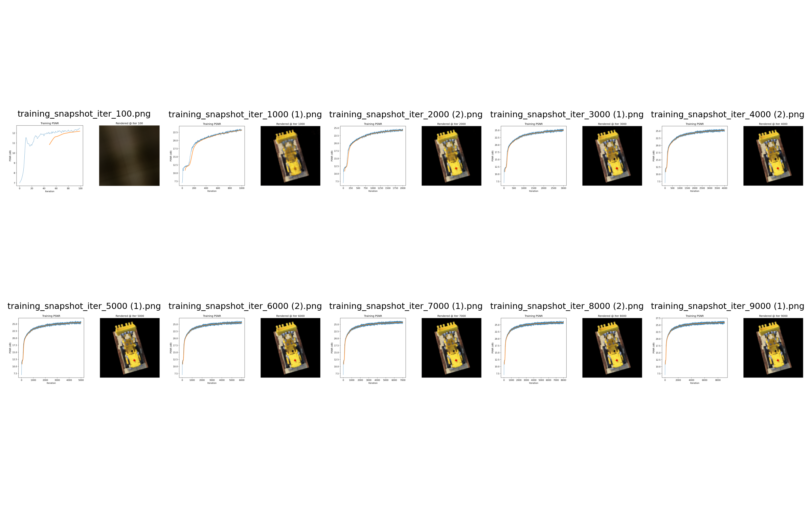
PSNR curves on training and validation set.
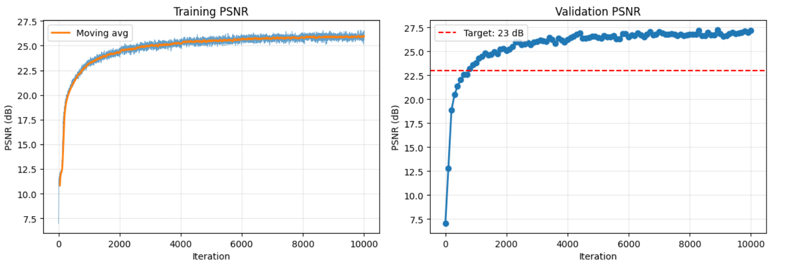
3D rendering.
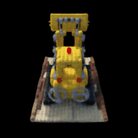
I began by running ArUco detection on each image using OpenCV’s built-in detector, which returns the pixel coordinates of any detected marker corners; if an image yields no detections, I return empty arrays so the pipeline can ignore it. For every marker ID, I define its corresponding 3D corner coordinates. In my first (and buggy) attempt at this, I calibrated on 6 tags but then scanned on 1 tag. I also assumed that the world origin was the top left corner of each tag out of the 6, which just doesn;t make sense. To improve it, I set the world origin with respect to the top-left tag, then calculated offsets of the other 5 tags.
I loaded the calibration images from disk, amd resized them using cv2.resize for computational efficiency, and build the full list of object points and image points by pairing each detected 2D corner with its 3D world coordinate. Because I didn’t want to mess with the intrinsics matrix, I made sure to resize the calibration images by the same amount. Once all correspondences were collected, I called cv2.calibrateCamera, which runs nonlinear optimization to estimate the camera intrinsic matrix and distortion coefficients, along with per-image rotation and translation vectors.
For the object-scan images, I again detected markers and use cv2.solvePnP to recover the camera pose for each image that contains the reference tag. The result is a rotation vector and translation vector that define a world-to-camera transform, which I convert to a 3×4 extrinsic matrix, then inverted by transposing the rotation and adjusting the translation so that I got a camera-to-world matrix consistent with NeRF conventions.
I stored each (image, c2w) pair and visualized all camera frustums in Viser by converting each rotation matrix to a quaternion and passing it, along with the translation and image preview, to the Viser server.
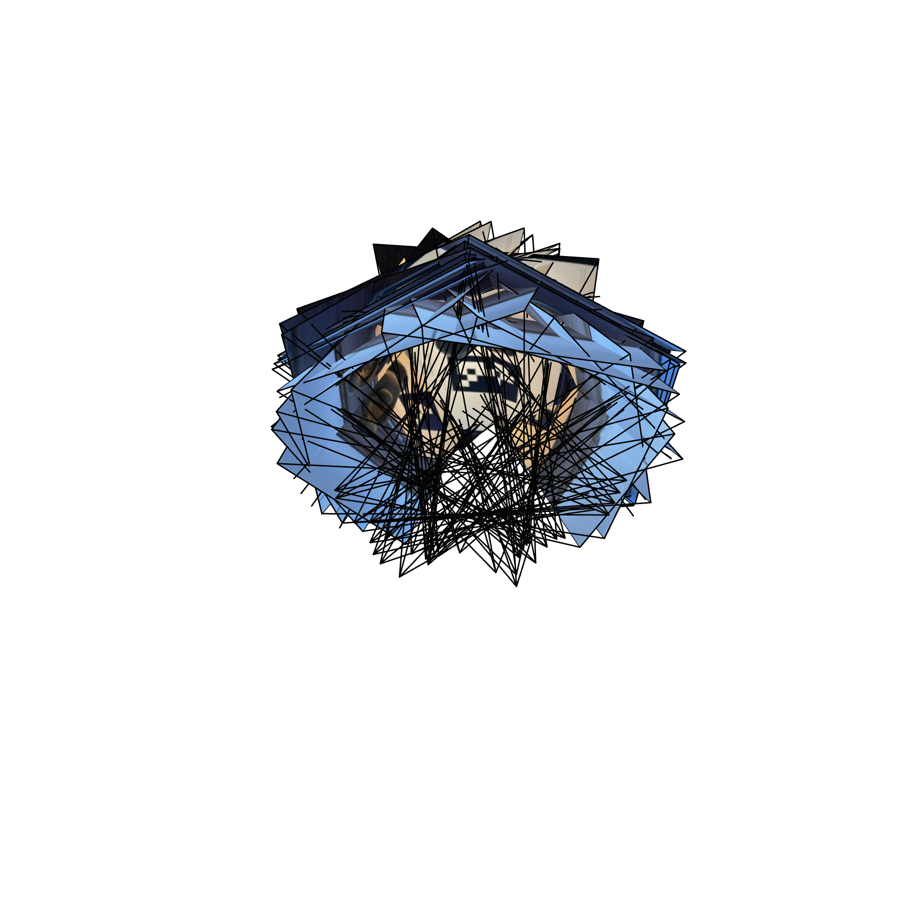
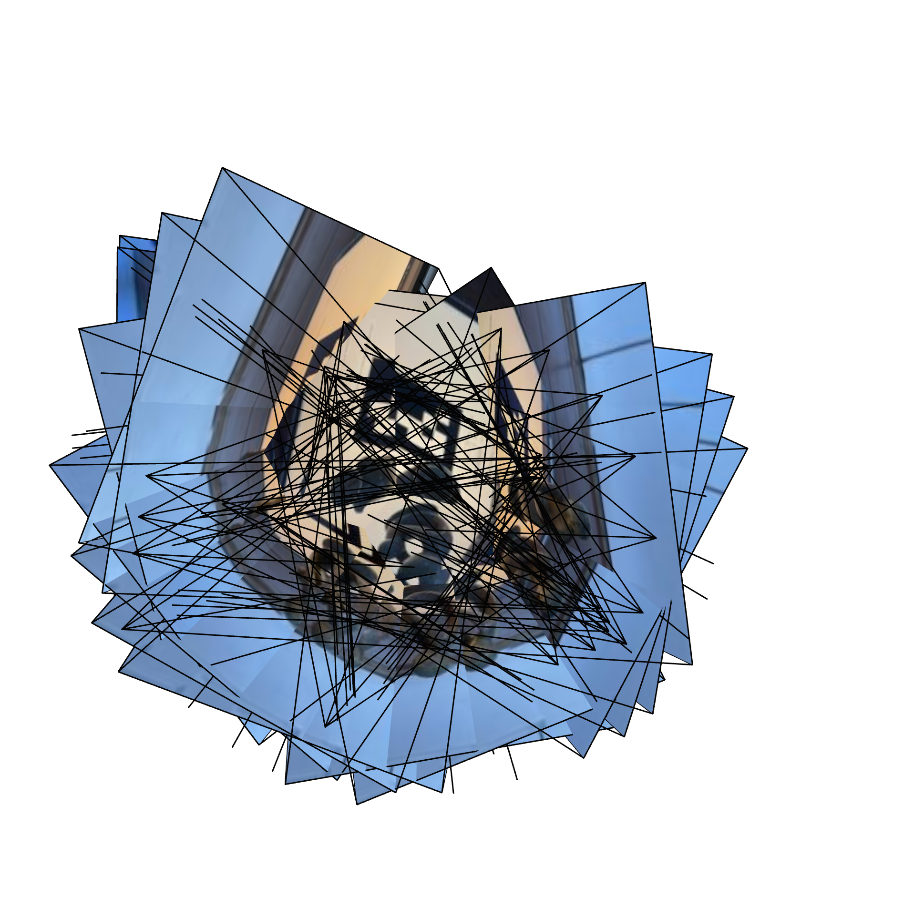
Before finalizing the dataset, I undistorted all images using cv2.undistort and the previously estimated intrinsics and distortion coefficients. I added functionality for optional cropping that computes an optimal new camera matrix and maps all pixel coordinates into this rectified domain. I undistorted all imgs from my data.
To verify everything, I display a few undistorted images using Matplotlib, converting BGR to RGB manually. After that, I split the aligned (image, c2w) pairs into train/validation/test sets, extracted the focal length from the intrinsic matrix, and saveed all arrays of images, poses, and focal len into a single .npz file using numpy.savez so that the NeRF training pipeline can load everything in one step.
I used the same model and hyperparameters as described for the lego data, except I set near=0.02 and far=0.5.
Here is a training image so you can see what object I'm using.
Notice how training PSNR is not bad (gets to about 22). However, the reconstructions look really blurry. Even after retaking my photos, being super careful to take them at uniform distance with the same focal length as during calibration, I just wasn't able to do better than this.
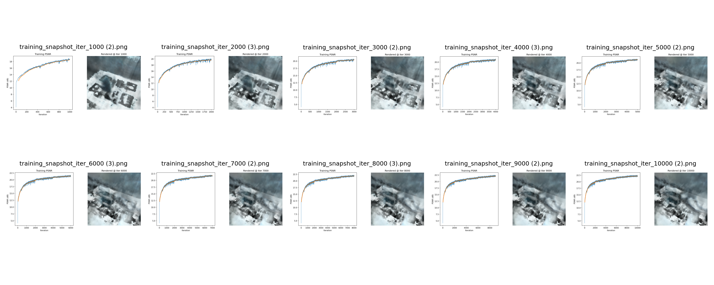
PSNR curves on training and validation sets. It's not a surprise with how bad the resonstructed images look that validation PSNR is quite low. Also, with my small data set of images, I only had 6 validation images, meaning that the validation loss and PSNR might not be representative of my model's capabilities.
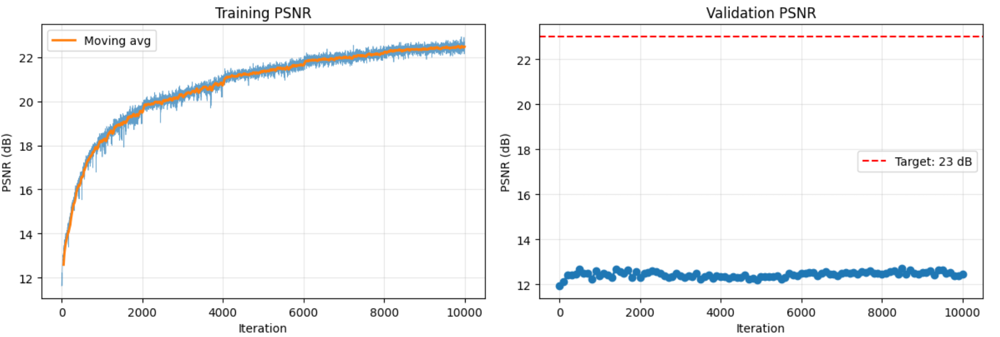
Here is the 3D rendering of my object just cause I thought it was cool!
You can sort-of see the statue in the center (it's a gray blur). Maybe it wasn't smart to choose a gray object and a gray background... Anyways, I spend 7 hours trying to improve this, so this is my stopping point.
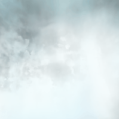
Implementing the camera flyaround was really difficult, actually. I got really bad results when I rotated around the x, y, and z axes respectively. I think this is more due to poor predictions of novel views than any fly around code.
Below is one of my attempts at this method.
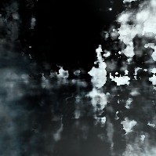
To improve my camera flyaround, I interpolated between camera training poses to ensure that the flyaround matches the training distribution.
First, I extracted positions and rotations from my c2w training matricies. Second, I created interpolation indicies using linspace then I interpolated mositions using np.interp. I interpolated roations usins Slerp. Third, I created new interpolated c2w matricies. Lastly, I rendered flyaround frames using the interpolated c2ws and stitched them together.
Improved flyaround:
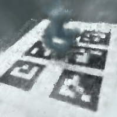